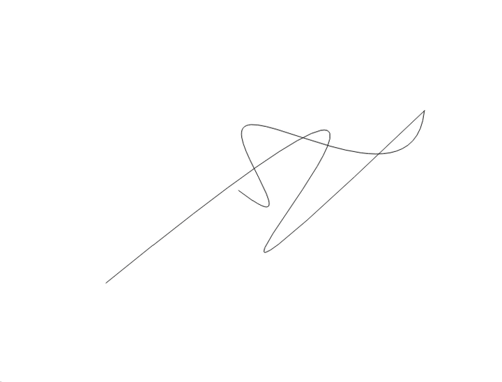

Fast and lightweight C++ library for Bezier curves of any order.

Features
- Curves of any order (any number of control points)
- Fast operations on curves
- Dynamic manipulation
- Curve fitting, joining and offsetting
- Composite Bezier curves (polycurves)
Quick start
Operations
- Get value, derivative, curvature, tangent and normal for a parameter t
- Point projection onto curve
- Get curve length, step along curve by arc length
- Get a derivative curve (hodograph)
- Split into subcurves
- Find curve roots, extrema and bounding box
- Find points of intersection
- Raise/lower order
- Apply parametric and geometric continuities
- Fit a curve through a polyline
- Join two curves into a single fitted curve
- Offset a curve by a given distance
Integration
The library is find_package() compatible:
Installation
Build options (default OFF):
| Option | Description |
|---|---|
BUILD_SHARED_LIBS | Build a shared library instead of a static one |
BUILD_TESTING | Build the unit tests |
BUILD_EXAMPLE | Build the Qt5 example application |
Example application
A small Qt5 based program written as a playground for manipulating Bezier curves. Enable it at configure time, then build and run:
A side panel shows live data (curve counts, selected curve order and length, offset) and provides drawing tools:
- Free-hand draw — sketch a stroke that is fitted to a curve
- Control points — place control points one by one to build a curve
- Help — list of all mouse and keyboard actions (also shown by pressing
H)
Curves can be selected, reshaped via their control points, split, joined, offset, have their order raised/lowered, and inspected (bounding box, intersections, extrema, curvature). See the help dialog for the full list of shortcuts.
ROS 2
The package is a plain CMake package (build_type: cmake) that builds with colcon — no system-wide installation needed. Clone it into the src folder of your colcon workspace and build:
Dependencies
- Eigen 3.3+
- Qt5 (Core, Gui, Widgets) — only for the example application
License
[Apache License 2.0](LICENSE)
Credit
Some algorithm implementations are based on A Primer on Bezier Curves by Pomax.
The development of this software was in part supported by the European Cohesion Fund, through grant number KK.03.2.2.04.314 "Software modules for advanced autonomous motion of load-transportation vehicles (Soft4AGV)" of the "Innovations of newly established SMEs - phase 2" open call.